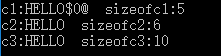
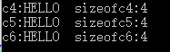
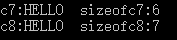
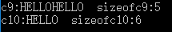
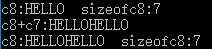
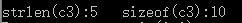

赋值篇：
Part1 错误引例*2：
1 char c6[];//WRONG
2 c6="HELLO";//WRONG
3
4 char c7[];//WRONG
5 c7[0]='H';//WRONG
6 c7[1]='E';//WRONG
7 c7[2]='L';//WRONG
8 c7[3]='L';//WRONG
9 c7[4]='O';//WRONG1 char c1[]={'H','E','L','L','O'};
2 char c2[]={'H','E','L','L','O','\0'};
3 char c3[10]={'H','E','L','L','O','\0'};
4 printf("c1:%s sizeofc1:%d\n",c1,sizeof(c1));
5 printf("c2:%s sizeofc2:%d\n",c2,sizeof(c2));
6 printf("c3:%s sizeofc3:%d\n",c3,sizeof(c3));
1.printf %s时，每次地址+1，直到找到'\n'为止，所以c1会乱码
Part3：
1 char *c4="HELLO";
2 char *c5="HELLO\0";
3 char *c6;
4 c6="HELLO";
5 printf("c4:%s sizeofc4:%d\n",c4,sizeof(c4));
6 printf("c5:%s sizeofc5:%d\n",c5,sizeof(c5));
7 printf("c6:%s sizeofc6:%d\n\n",c6,sizeof(c6));
1.注意字符指针可以声明后赋值，与第一个c6对比
2.注意这里打印的size，因为打印的是字符串数组的首字地址size，所以size都是一样的
Part4：
1 char c7[]="HELLO";
2 char c8[]="HELLO\0";
1 char c9[5];
2 c9[0]='H'; c9[1]='E';
3 c9[2]='L'; c9[3]='L'; c9[4]='O';
4
5 char c10[6];
6 c10[0]='H'; c10[1]='E';
7 c10[2]='L'; c10[3]='L';
8 c10[4]='O'; c10[5]='\0';
9 printf("c7:%s sizeofc7:%d\n\n",c7,sizeof(c7));
10 printf("c9:%s sizeofc9:%d\n\n",c9,sizeof(c9));
11 printf("c10:%s sizeofc10:%d\n\n",c10,sizeof(c10));
1.注意c9，因为printf %s时，每次地址+1，直到找到'\n'为止，所以会把c10也一起打印了
Part6 scanf输入：
char a[10];
scanf("%s",a);
printf("%s",a);假如像这样普通输入的话，遇到空格、换行都会使字符串赋值中断，一种解决方法是看有多少段，逐段赋值然后连到一起。另一种方法是gets()
1 char a[10]；
2 gets(a);
3 puts(a);1.gets()可以识别空格，直到换行符出现，舍弃换行符，并自动补'\0'
2.puts()将字符串输出后会自动换行
3. getchar()、putchar()则是可以存储空格和换行的字符输入输出函数
函数篇：
Part1 strcpy(char * dest,char *sr)：
1 char c11[6];
2 strcpy(c11,"HELLO\0");
3 printf("c11:%s sizeofc11:%d\n\n",c11,sizeof(c11));1 char *c11;
2 char temp[6];
3 c11=temp;
4 strcpy(c11,"HELLO\0");
5 printf("c11:%s sizeofc11:%d\n\n",c11,sizeof(c11));1 char c7[]="HELLO";
2 char c8[]="HELLO\0";
3 printf("c8:%s sizeofc8:%d\n",c8,sizeof(c8));
4 printf("c8+c7:%s\n",strcat(c8,c7));
5 printf("c8:%s sizeofc8:%d\n\n",c8,sizeof(c8));
功能：把sr的内容复制到dest结尾处（覆盖'\0'）
Part3 strlen(char *str1)：
1 char c3[10]={'H','E','L','L','O'};
2 printf("strlen(c3):%d sizeof(c3):%d",strlen(c3),sizeof(c3));
功能：求实际长度